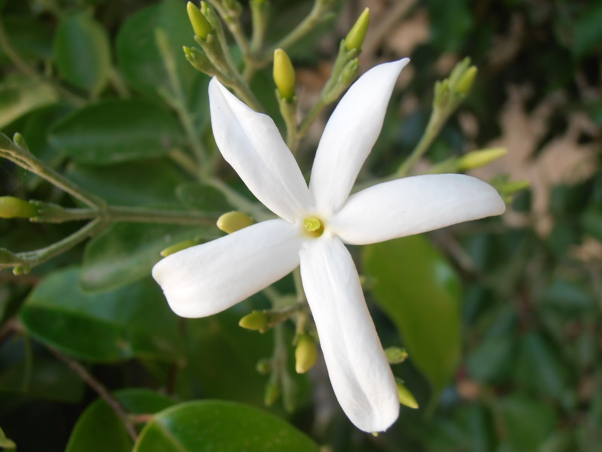

Nuevo producto

Jazmin
El género Jasminum, cuyas alrededor de 200 especies reciben el nombre común de jazmín, son oriundas de las regiones tropicales y subtropicales del Viejo Mundo y ampliamente cultivadas
Saber más